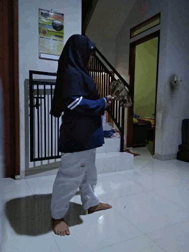
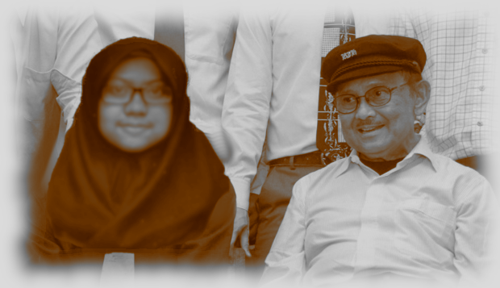

Hobi saya sebenarnya bukan masak, tapi tidak juga. Karena sebenarnya saya suka memasak, tetapi saya tidak bisa memasak. Karena masakkan saya selalu gagal. Sebenarnya saya pernah bercita-cita untuk menjadi patisserie. Jenis makanan yang saya sukai adalah segala jenis makanan yang mengandung keju, makanan manis, pasta, makanan sunda, makanan yang mengandung krim, buah-buahan.

Karya ini saya buat untuk memenuhi tugas komputer dari SMAKBO
Idola saya ada B.J Habibie. Beliau merupakan idola saya sejak SMP. Beliau menginspirasi saya untuk terus meraih impian.
